(Scroll for more)
Made for White Carbon Motors, Gandhinagar
Team is Aakash, Vaibhav, Pritam, Rohan, Sahil
Focus is Sustainable micro-mobility · first & last mile
Date is December 2025
White Carbon Motors (WCM), founded in 2020, is building sustainable mobility and energy systems for fast-growing megacities: electric vehicles, smart batteries and clean energy distribution networks. We mapped its whole ecosystem, from suppliers and stations to riders and policy, to find where the system gets stuck, then co-designed strategies and an app to help it solve the first and last mile commute.
Methods: Organisation & ecosystem mapping, SDG alignment, competitor case studies & SWOT, field visit, ride-alongs, customer segmentation, iceberg model, 4P system map, causal loop diagram, touchpoints, gamification


System map of WCM


(01)Context
Micro-mobility means lightweight, typically electric vehicles for short urban trips: a sustainable, flexible alternative to cars that eases congestion and cuts carbon. WCM runs O3 e-scooters (25 km/h, about 60 km per charge, portable 48V battery) from stations at GNLU, IACE and Kudasan in Gandhinagar, built at its GIDC factory from Indian and imported components.
Its work lines up with the Sustainable Development Goals on accessible clean energy, resilient eco-friendly cities, renewable energy use and cutting carbon through clean transport.
(02)Learning from the market
We studied Yulu, Bounce, Zypp, Vogo and eBikeGo. Yulu leads dockless shared mobility; Zypp focuses on B2B “EV-as-a-Service” for logistics; Bounce moved from rentals to selling EVs with battery-as-a-service; eBikeGo grows through franchises; and Vogo’s dock-based model struggled and scaled down. The common threads: battery swapping and BaaS are key differentiators, stable B2B contracts beat pure rentals, and competition, regulation and infrastructure costs are the shared threats.
(03)The problem
Fleet riders and everyday riders use the same scooter. The iceberg model showed how heavy fleet use, high wear and maintenance issues shape everyone’s view of the brand. Underneath sit structures that don’t separate fleet and personal needs: one product for both, service workflows not built for intensive use, and supply-chain limits on variants.
The gaps we identified: limited scale and adoption, infrastructure challenges (charging and disorganised energy distribution), affordability barriers, and the need for awareness and behaviour change, all adding to high operating costs.
(04)Seeing the system
The system map lays WCM out across Profit, People, Process and Product, plus Planet and Place. It shows where value is created (B2B logistics revenue, student rentals, solar charging) and where it breaks (manual battery logistics, breakdowns without on-site repair, limited charging hubs).
The causal loop diagram explains the dynamics:
- B1 Infrastructure Trap (balancing): poor infrastructure → downtime and empty stations → poor service and churn → lost revenue → budget cuts → even less infrastructure.
- R2 Cult of Adoption (reinforcing): user satisfaction → loyalty and word of mouth → revenue growth → reinvestment in service quality.
- R3 Eco-Hedonic Loop (reinforcing): environmental consciousness and community engagement build feel-good, identity-driven value that keeps people riding.
(05)The strategies
Pocket Freedom: the campus mobility strategy
3-day campus mobility drives at IIT-G, PDEU, Karnavati and NIFT with free test rides, live O3 displays and QR stations, plus a free first month for the first 50 sign-ups. A Student Captain Program (10 per campus), Instagram takeovers, WhatsApp groups and a referral leaderboard drive engagement; Bronze, Silver and Gold loyalty tiers, subscriptions and semester packages drive retention. Referrals (three free rides each side) turn advocacy back into acquisition, a flywheel tracked through sign-ups, captain conversion, monthly active riders and referral-to-acquisition ratio.
The “Green Gandhinagar Silent Ride”
A monthly community ride from the Riverfront to the gardens with branded flags, Instagrammable moments and a “silence vs noise” message, backed by an exclusive club, milestone badges, UGC contests and #SilentRevolution.
The WCM app
An app that lets riders choose who they are (student, delivery partner or general user), verify through student ID or Aadhaar KYC, find bikes by station, ride solo or as a squad, and book pickup and return slots.
Full case study
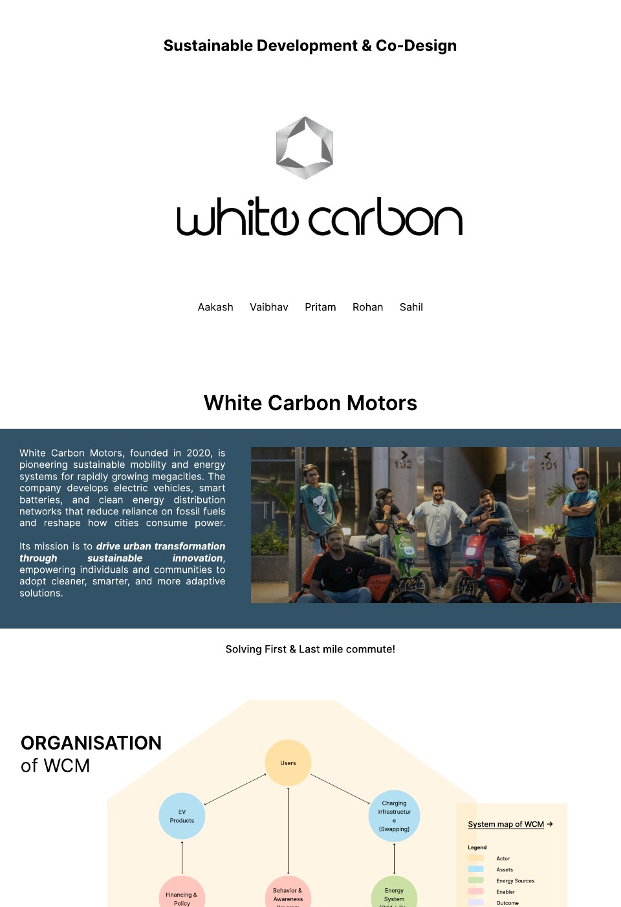
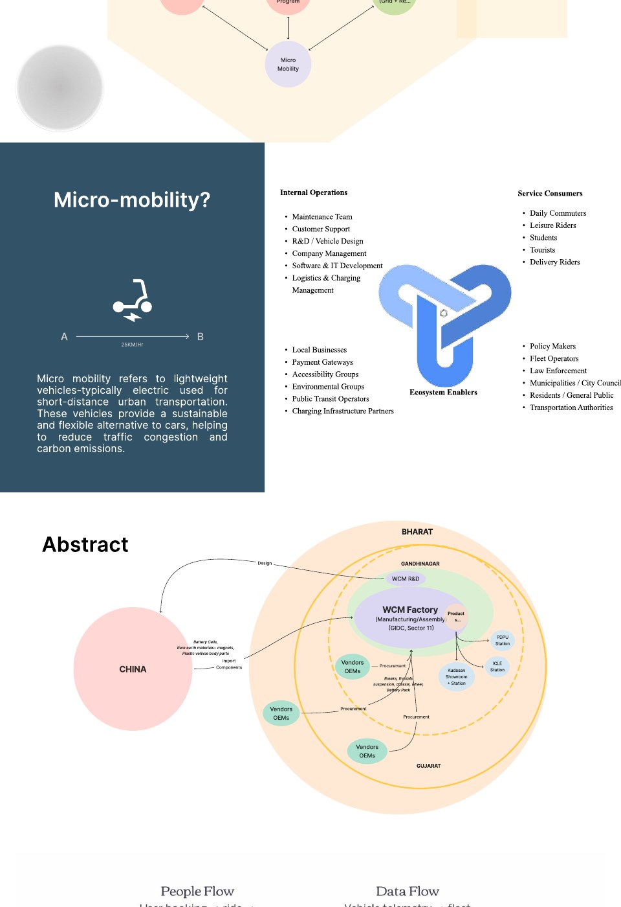
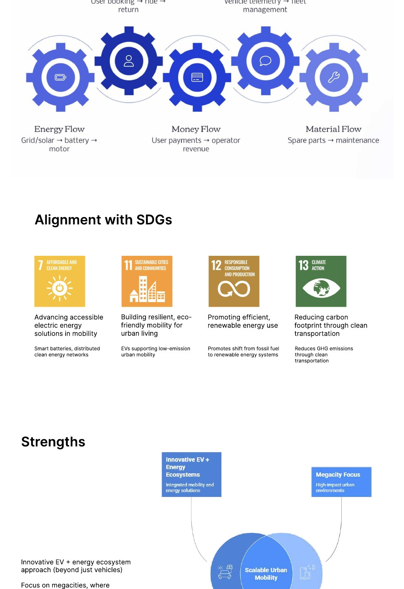
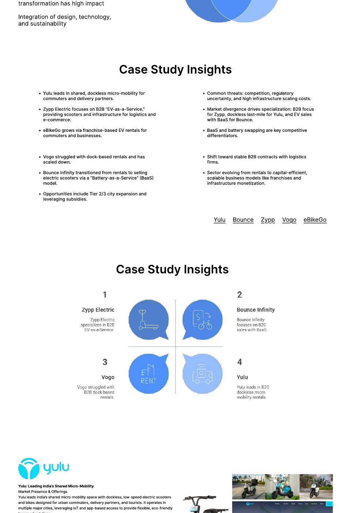
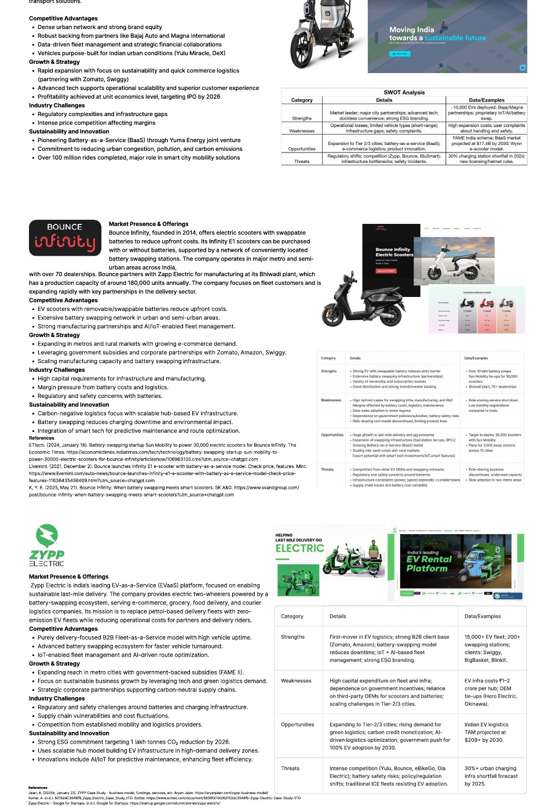
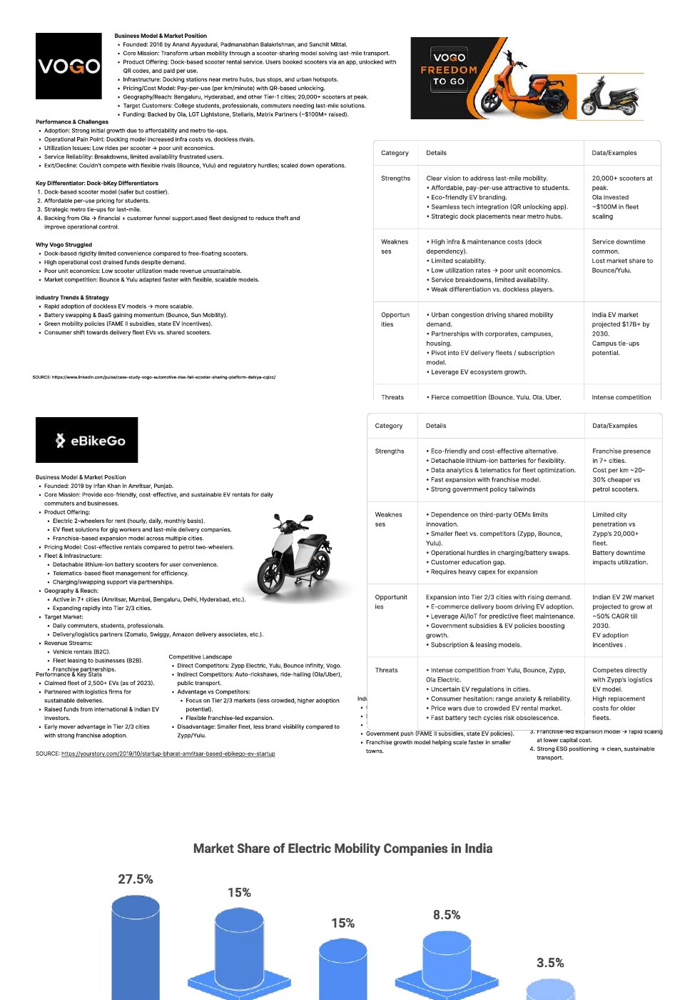
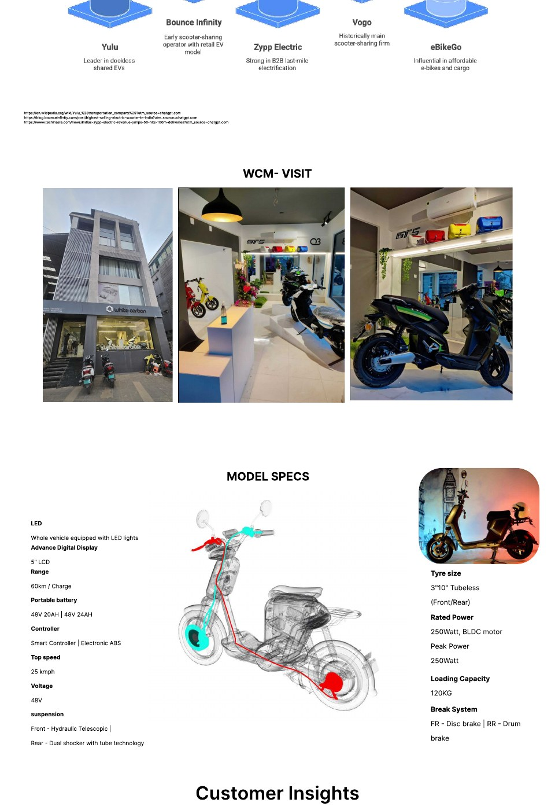
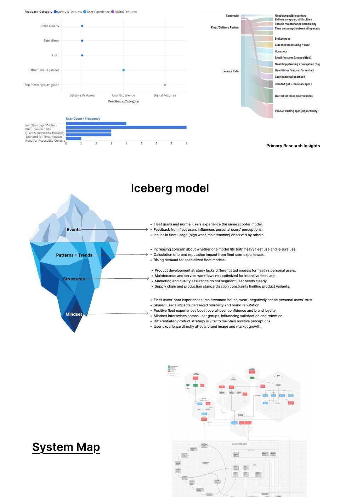
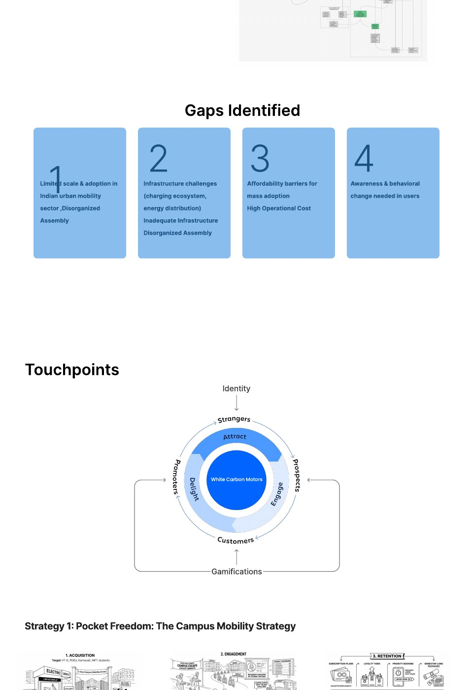
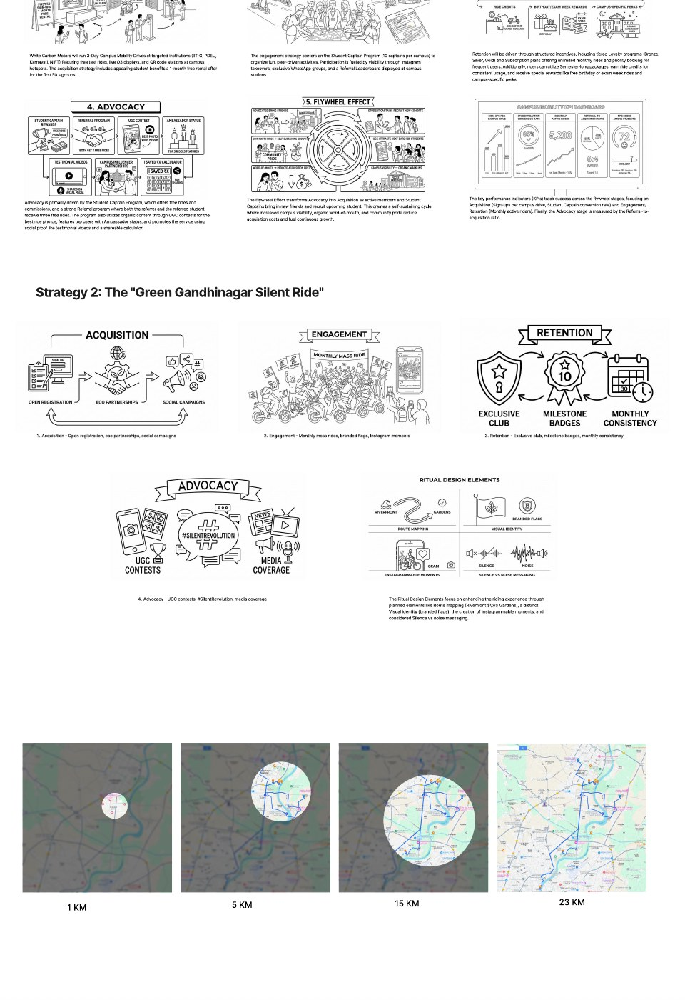
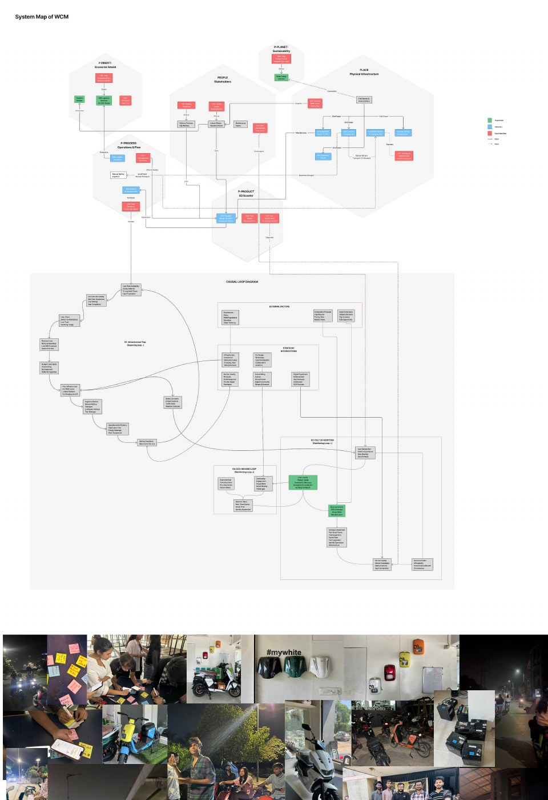
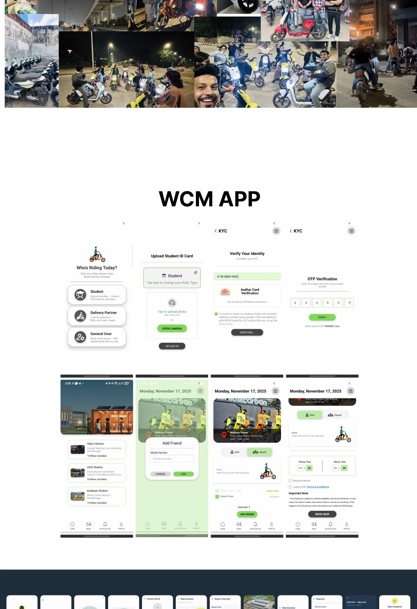
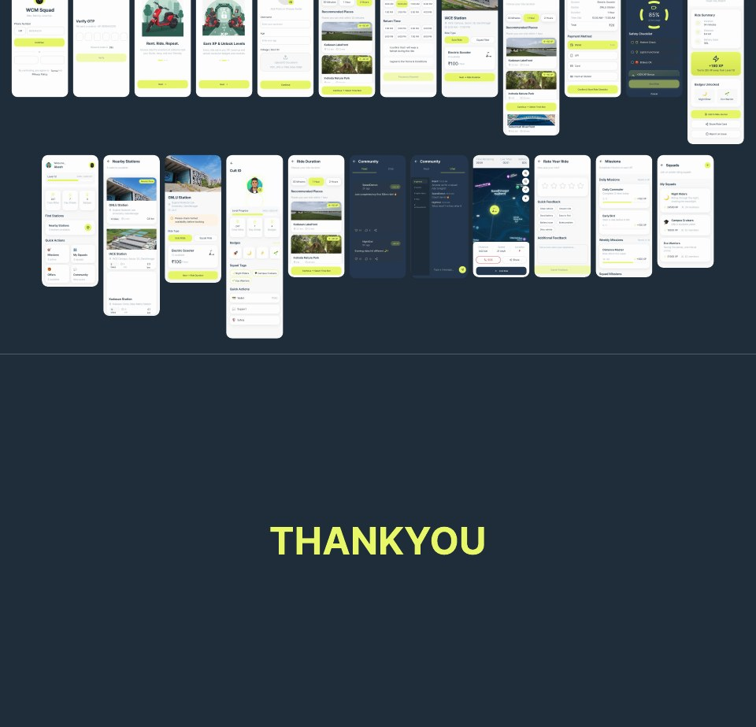